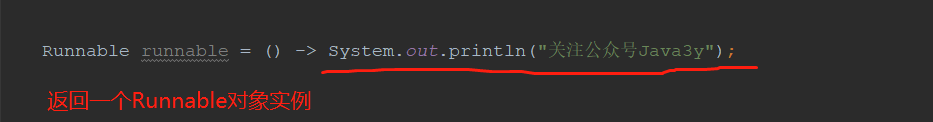

原文连接:https://www.cnblogs.com/Java3y/p/11570491.html
前言
只有光头才能变强。
文本已收录至我的GitHub仓库，欢迎Star：https://github.com/ZhongFuCheng3y/3y
中秋去了躺上海，在外滩上打了个卡：
紧接着学了一下Java的函数式编程，给大家整理了一下，一起学习！
一、Lambda用法
之前写Optional这个类的时候，简单说了一下Lambda是怎么用的，这里再跟大家一起回顾一下，Lambda的语法是这样的：
以Lambda语法创建线程和匿名内部类创建线程的区别（显然代码少了很多！）：
public static void main(String[] args) {
// 用匿名内部类的方式来创建线程
new Thread(new Runnable() {
@Override
public void run() {
System.out.println("公众号：Java3y---关注我！");
}
});
// 使用Lambda来创建线程
new Thread(() -> System.out.println("公众号：Java3y---关注我！"));
}使用Lambda表达式，实际就是创建出该接口的实例对象。

图示；Runnable接口来举例：
使用Labmda表达式需要函数式编程接口，比如在Runnable接口上我们可以看到@FunctionalInterface注解（标记着这个接口只有一个抽象方法）
1.1 函数式编程接口
从上面的代码例子可以看出，我们使用Lambda表达式创建线程的时候，并不关心接口名，方法名，参数名。我们只关注他的参数类型，参数个数，返回值。
JDK原生就给我们提供了一些函数式编程接口方便我们去使用，下面是一些常用的接口：
简单说明一下：
- 表格中的一元接口表示只有一个入参，二元接口表示有两个入参
Demo：
// Consumer 一个入参，无返回值
Consumer<String> consumer = s-> System.out.println(s);
consumer.accept("Java3y");
// Supplier 无入参，有返回值
Supplier<String> supplier = () -> "Java4y";
String s = supplier.get();
System.out.println(s);
//.....使用Lambda时，要记住的就两点：
- Lambda返回的是接口的实例对象
- 有没有参数、参数有多少个、需不需要有返回值、返回值的类型是什么---->选择自己合适的函数式接口
1.2 方法引用
在学Lambda的时候，还可能会发现一种比较奇怪的写法，例如下面的代码：
// 方法引用写法
Consumer<String> consumer = System.out::println;
consumer.accept("Java3y");如果按正常Lambda的写法可能是这样的:
// 普通的Lambda写法
Consumer<String> consumer = s -> System.out.println(s);
consumer.accept("Java3y");显然使用方法引用比普通的Lambda表达式又简洁了一些。
如果函数式接口的实现恰好可以通过调用一个方法来实现，那么我们可以使用方法引用
方法引用又分了几种：
- 静态方法的方法引用
- 非静态方法的方法引用
- 构造函数的方法引用
方法引用Demo:
public class Demo {
public static void main(String[] args) {
// 静态方法引用--通过类名调用
Consumer<String> consumerStatic = Java3y::MyNameStatic;
consumerStatic.accept("3y---static");
//实例方法引用--通过实例调用
Java3y java3y = new Java3y();
Consumer<String> consumer = java3y::myName;
consumer.accept("3y---instance");
// 构造方法方法引用--无参数
Supplier<Java3y> supplier = Java3y::new;
System.out.println(supplier.get());
}
}
class Java3y {
// 静态方法
public static void MyNameStatic(String name) {
System.out.println(name);
}
// 实例方法
public void myName(String name) {
System.out.println(name);
}
// 无参构造方法
public Java3y() {
}
}结果如下：
最后
Lambda虽然代码看起来是简洁，但是如果复杂的话还是比较难看明白的。
在学习Lambda的时候，首先我们得知道有哪些常用函数式编程接口，这些函数式编程接口的有什么区别（参数个数、返回值类型）
Lambda表达式返回的是接口对象实例，如果函数式接口的实现恰好可以通过调用一个方法来实现，那么我们可以使用方法引用来替代Lambda表达式
最后再完整举个例子：
// Supplier是一个无入参带返回的值的函数式编程接口
// () -> new Java3y()这整句Lambda表达式，返回的是Supplier接口的实例。从Lambda表达式可以看出无参数，带返回值
Supplier<Java3y> supplier = () -> new Java3y();
// 由于这个“() -> new Java3y()”Lambda表达式可以通过调用一个方法就实现了，那么我们可以优化成方法引用
Supplier<Java3y> supplier2 = Java3y::new;
乐于输出干货的Java技术公众号：Java3y。公众号内有200多篇原创技术文章、海量视频资源、精美脑图，关注即可获取！

觉得我的文章写得不错，点赞！